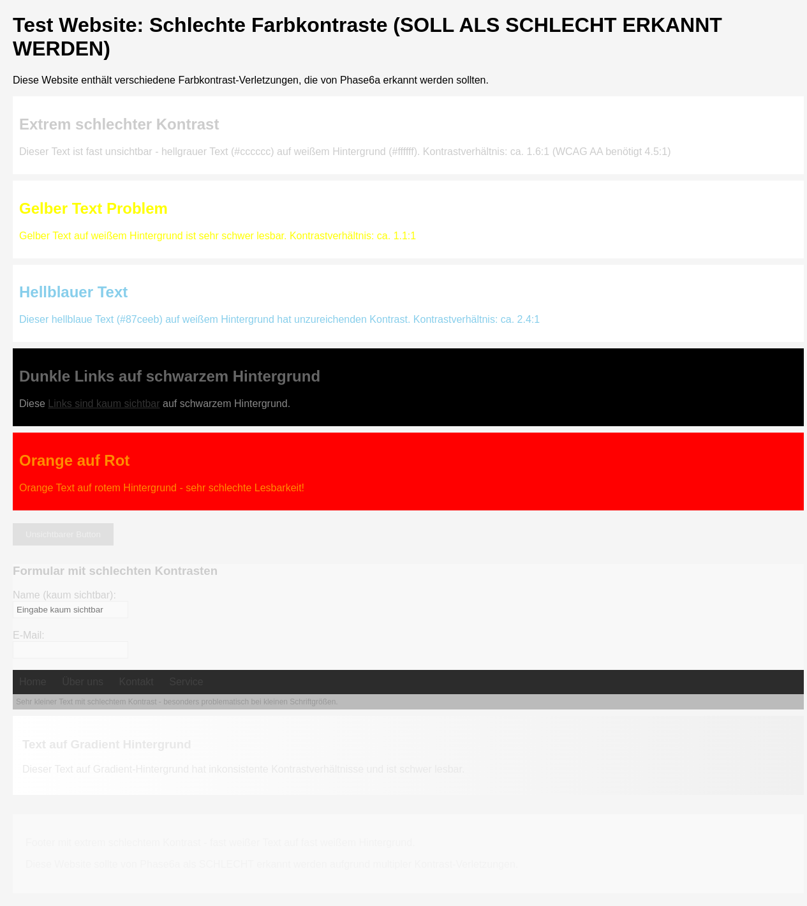
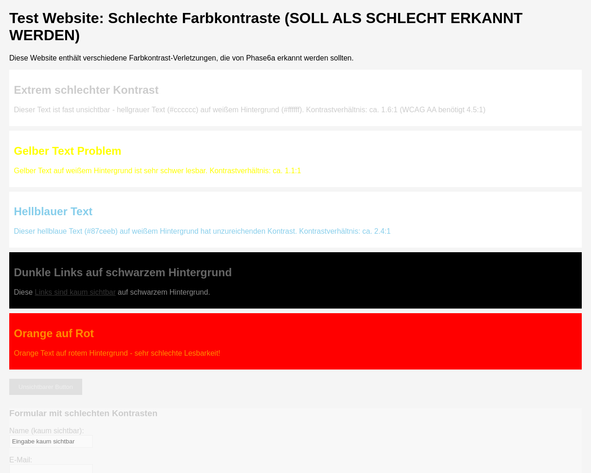

🎨 Visual Color Contrast Analysis
Violations found: 0

Generated: 7/11/2025, 9:57:08 AM


Violations found: 0
Violations found: 0

Phase6a Score: 33%
Color Contrast Issues: N/A
Use of Color Issues: N/A
Color Contrast Issues: 22
Use of Color Issues: 4